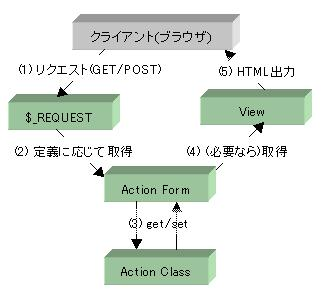
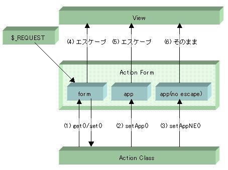

ここでは、HTML フォームや URL パラメータと、送信されたその値の取り扱いについての詳しい解説をします。 ActionForm は Ethna を使いこなす鍵となるでしょう。
アクションクラスからフォーム値へのアクセスするイメージは以下のようになっています。
次に ActionForm とは何か、について簡単にご説明します。 ActionForm は、Ethnaでは、
という3種類の値のコンテナだと考えて下さい。以下のようなイメージです。
フォーム値には get() / set() メソッドでアクセスします
アプリケーション設定値(フォーム値以外で、ビューに表示させたいダイナミックな値)は setApp() メソッドで ActionForm に格納します
アプリケーション設定値(HTMLエスケープさせたくない値)は setAppNE() メソッドで ActionForm に格納します
フォーム値はテンプレートで
{$form.フォーム名}
としてアクセスします。値は常にHTMLエスケープされます。
アプリケーション設定値( setApp() で格納されたもの)はテンプレートで
{$app.変数名}
としてアクセスします。値は常にHTMLエスケープされます。
アプリケーション設定値( setAppNE() で格納されたもの)はテンプレートで
{$app_ne.変数名}
としてアクセスします。この値はHTMLエスケープされません。 不特定多数の入力する値をこのようにエスケープせずに出力することは、推奨されません。エスケープせずに出力する値は、限定された入力 (例えば、管理者の入力など) に限るべきでしょう。
なお、 ActionForm はアクションクラスと対になって必ず生成され、 prepare() あるいは perform() メソッド、また、 ViewClass の preforward() では必ず
$this->af // 面倒なら$this->afでも可
でアクセスできることが保証されています。アクションクラスに対応する ActionForm が未定義の場合は、フォーム値定義の無いデフォルトの ActionForm が生成されます。